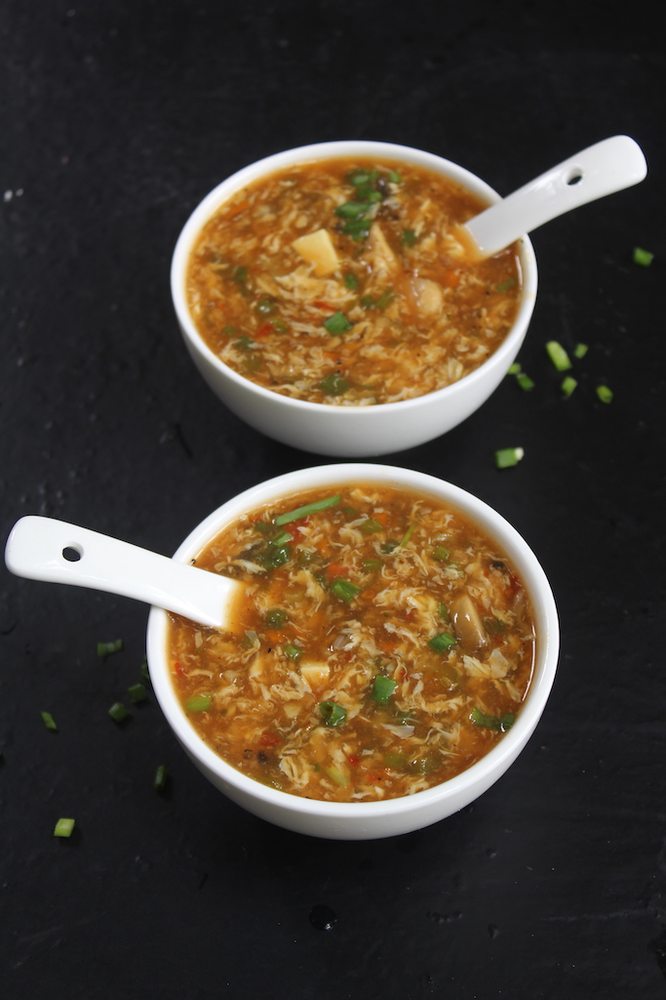

Low-Calorie Vegetable Soup

Description
This low-calorie vegetable soup is a nutritious and filling option for a healthy meal. Made with a variety of
vegetables and lean chicken broth, each serving contains approximately 150 calories and 10 grams of protein.
Ingredients
- 2 cups mixed vegetables (carrots, zucchini, bell peppers, onions)
- 2 cups lean chicken broth
- 1 can diced tomatoes
- 1 teaspoon dried basil
- 1 teaspoon dried oregano
- Salt and pepper to taste
Steps
- In a large pot, sauté the mixed vegetables in a little water until tender.
- Add the lean chicken broth, diced tomatoes, dried basil, and dried oregano.
- Bring to a boil and then simmer for 10-15 minutes.
- Season with salt and pepper to taste.
- Serve hot and enjoy!